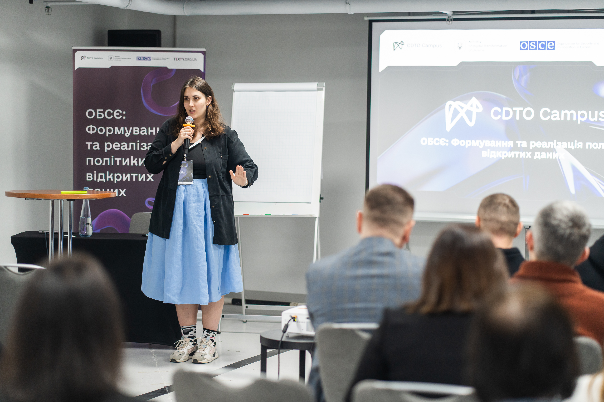
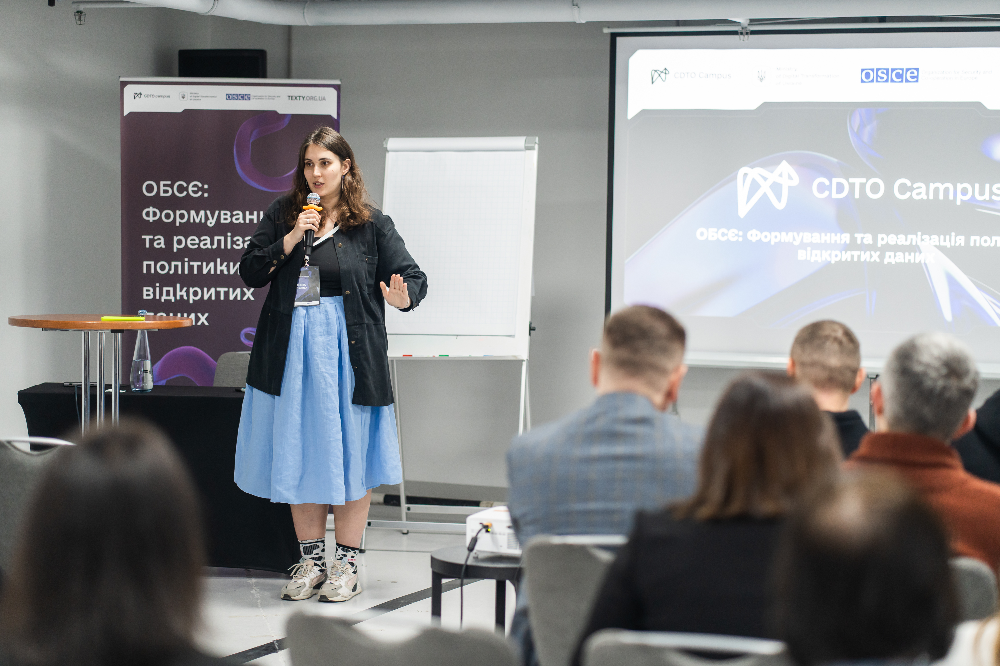

Навчальна програма складається із дводенного тренінгу для представників бізнесу та фінансового сектору.
Під час навчання учасники тренінгу дізнаються, що таке відкриті дані у фінансовій сфері та бізнесі, які є джерела та набори відкритих даних як в Україні, так і на міжнародному рівні. Вони опанують інструменти впорядкування, аналізу та візуалізації даних, а також дізнаються, як використовувати штучний інтелект у роботі з даними. До тренінгу також долучаться фахівці з державної та банківської сфер, які розкажуть про сучасний стан та перспективи використання відкритих даних.
За результатами учасники знатимуть, які набори даних якісно оприлюднені і придатні для використання, а також розумітимуть, які кроки треба зробити, щоб створити власний успішний проект на основі відкритих даних. Для бізнесу відкриті дані дають широкі перспективи аналізу ринку та конкурентного середовища, дозволяють аналізувати зовнішні ринки для розвитку власного експорту.
Відкриті дані є потужним інструментом для підвищення ефективності бізнесу, аналітики та фінансових установ. Вони забезпечують прозорий доступ до актуальної інформації про ринки, компанії, конкурентів і споживачів, що дає змогу приймати обґрунтовані рішення, виявляти нові можливості для розвитку та мінімізувати ризики. Для банків та фінансового сектору відкриті дані стають основою для перевірки надійності партнерів, аналізу кредитоспроможності та прогнозування тенденцій, сприяючи зростанню конкурентоспроможності та інноваційності бізнесу.
Під час навчання практики поділяться своїм досвідом, розкажуть про успіхи та виклики для власних проектів. За результатами навчання учасники зрозуміють, які перспективи можуть дати відкриті дані для розвитку бізнесу та банківської сфери в Україні.


 
